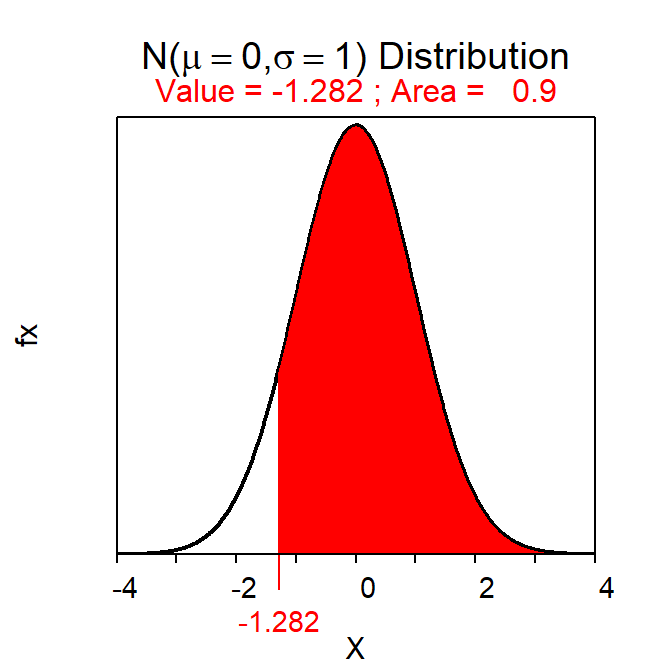

Module 18 1-Sample t-Test
Prior to this module, hypothesis testing methods required knowing σ, which is a parameter that is seldom known. When σ is replaced by its estimator, s, the test statistic follows a Student’s t rather than a standard normal (Z) distribution. In this module, the t-distribution is described and a 1-Sample t-Test for testing that the mean from one population equals a specific value is discussed.
18.1 t-distribution
A t-distribution is similar to a standard normal distribution (i.e., N(0,1)) in that it is centered on 0 and is bell shaped (Figure 18.1). The t-distribution differs from the standard normal distribution in that it is heavier in the tails, flatter near the center, and its exact dispersion is dictated by a quantity called the degrees-of-freedom (df). The t-distribution is “flatter and fatter” because of the uncertainty surrounding the use of s rather than σ in the standard error calculation.66 The degrees-of-freedom are related to n and generally come from the denominator in the standard deviation calculation. As the degrees-of-freedom increase, the t-distribution becomes narrower, taller, and approaches the standard normal distribution (Figure 18.1).
Figure 18.1: Standard normal (black) and t-distributions with varying degrees-of-freedom.
Proportional areas on a t-distribution are computed using distrib() similar to what was described for a normal distribution in Modules 6 and 11. The major exceptions for using distrib() with a t-distribution is that distrib="t" must be used and the degrees-of-freedom must be given in df= (how to find df is discussed in subsequent sections). For example, the area right of t=-1.456 on a t-distribution with 9 df is 0.9103 (Figure 18.2).
( distrib(-1.456,distrib="t",df=9,lower.tail=FALSE) )Figure 18.2: Depiction of the area to the right of t=-1.456 on a t-distribution with 9 df.
Similarly, the t with an upper-tail area of 0.95 on a t-distribution with 19 df is -1.729 (Figure 18.3).67
( distrib(0.95,distrib="t",type="q",df=19,lower.tail=FALSE) )Figure 18.3: Depiction of the value of t with an area to the right of 0.95 on a t-distribution with 19 df.
18.2 1-Sample t-Test Specifics
A 1-Sample t-Test is similar to a 1-Sample Z-test in that both test the same H0. The difference, as discussed above, is that when σ is replaced by s, the test statistic becomes t and the scaling factor for confidence regions becomes a t*. Other aspects are similar between the two tests as shown below.68
- Hypothesis: H0:μ=μ0
- Statistic: \(\bar{\text{x}}\)
- Test Statistic: t=\(\frac{\bar{\text{x}}-\mu_{0}}{\frac{\text{s}}{\sqrt{\text{n}}}}\)
- Confidence Region: \(\bar{\text{x}}+\text{t}^{*}\frac{\text{s}}{\sqrt{\text{n}}}\)
- df: n-1
- Assumptions:
- σ is UNknown
- n≥40, n≥15 and the sample (i.e., histogram) is not strongly skewed, OR the sample is normally distributed.
- Use with: Quantitative response, one group (or population), σ UNknown.
18.3 Examples
18.3.1 Purchase Catch of Salmon?
Below are the 11-steps (Section 17.1) for completing a full hypothesis test for the following situation:
A prospective buyer will buy a catch of several thousand salmon if the mean weight of all salmon in the catch is at least 19.9 lbs. A random selection of 50 salmon had a mean of 20.1 and a standard deviation of 0.76 lbs. Should the buyer accept the catch at the 5% level?
- α=0.05.
- H0:μ=19.9 lbs vs. HA:μ >19.9 lbs where μ is the mean weight of ALL salmon in the catch.
- A 1-Sample t-Test is required because …
- a quantitative variable (weight) was measured,
- individuals from one group (or population) were considered (this catch of salmon), and
- σ is UNknown.69
- The data appear to be part of an observational study with random selection.
- The assumptions are met because …
- n=50≥40 and
- σ is unknown.
- \(\bar{\text{x}}\) = 20.1 lbs (and s = 0.76 lbs).
- t = \(\frac{20.1-19.9}{\frac{0.76}{\sqrt{50}}}\) = \(\frac{0.2}{0.107}\) = 1.87 with df = 50-1 = 49.
- p-value = 0.0337.
- H0: is rejected because the p-value <α.
- The average weight of ALL salmon in this catch appears to be greater than 19.9 lbs; thus, the buyer should accept this catch of salmon.
- I am 95% confident that the mean weight of ALL salmon in the catch is greater than 19.92 lbs (i.e., 20.1-1.677×\(\frac{0.76}{\sqrt{50}}\) = 20.1-0.18 = 19.92).
R Appendix:
( pval <- distrib(1.87,distrib="t",df=49,lower.tail=FALSE) )
( tstar <- distrib(0.95,distrib="t",type="q",df=49,lower.tail=FALSE) )
18.3.2 Body Temperature
Below are the 11-steps (Section 17.1) for completing a full hypothesis test for the following situation:
*Machowiak et al. (1992) critically examined the belief that the mean body temperature is 98.6oF by measuring body temperatures in a sample of healthy humans. Use their results in Table 18.1 to determine at the 1% level if the mean body temperature differs from 98.6oF.
| n | mean | sd | min | Q1 | median | Q3 | max |
|---|---|---|---|---|---|---|---|
| 130 | 98.25 | 0.73 | 96.3 | 97.8 | 98.3 | 98.7 | 100.8 |
- α=0.01.
- H0:μ=98.6oF vs. HA:μ≠98.6oF, where μ is the mean body temperature for ALL healthy humans. [Note that not equals was used because the researchers want to determine if the temperature is different from \(98.6\)oF.]
- A 1-Sample t-Test is required because …
- a quantitative variable (i.e., body temperature) was measured,
- individuals from one group (or population) is considered (i.e., healthy humans), and
- σ is unknown (i.e., not given in the background).
- The data appear to be part of an observational study although this is not made clear in the background information. There is also no evidence that randomization was used.
- The assumptions are met because …
- n=130≥40 and
- σ is unknown.
- \(\bar{\text{x}}\) = 98.25oF.
- t = \(\frac{98.25-98.6}{\frac{0.73}{\sqrt{130}}}\) = \(\frac{-0.35}{0.064}\) = -5.469 with df = 130-1 = 129.
- p-value=0.0000002. [Note that the result of
distrib()is multiplied by 2 because of the not equals HA.] - Reject H0 because p-value<α=0.01.
- It appears that the mean body temperature of ALL healthy humans is less than 98.6oF. [Note that the test was for a difference but because \(\bar{\text{x}}\)<98.6 this more specific conclusion can be made.]
- I am 99% confident that the mean body temperature (μ) for ALL healthy humans is between 98.08oC (=98.25-2.614×0.064) and 98.42oC (=98.25+2.614×0.064). [Note that the area in
distrib()is \(1-\frac{\alpha}{2}\) because of the not equals HA:.]
R Appendix:
( pval <- 2*distrib(-5.469,distrib="t",df=129) )
(tstar <- distrib(0.995,distrib="t",df=129,type="q") )
Recall that the sample standard deviation is a statistic and is thus subject to sampling variability.↩︎
This “reverse” calculation would be t* for a 95% lower confidence bound.↩︎
Compare these specifics to those for a 1-Sample Z-test in Section 17.2.↩︎
If σ is given, then it will appear in the background information to the question and will be in a sentence that uses the words “population,” “assume that,” or “suppose that.”↩︎